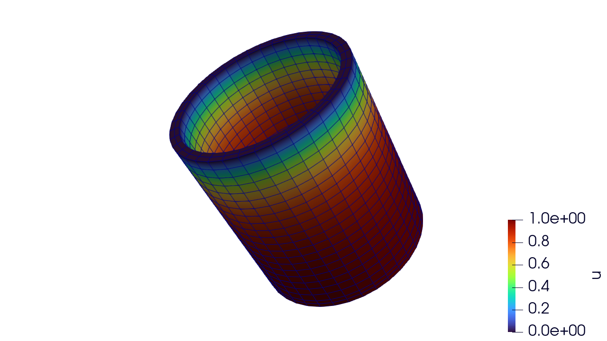

2. Advection-Diffusion Equation
This example mimics the second Moose tutorial.
Strong Form
Consider the advection equation on a domain $\Omega \subset \mathbb{R}^d$ with boundary $\partial \Omega$:
$-\nabla \cdot \nabla u + \mathbf{v}\cdot\nabla u = 0 \quad \text{in } \Omega,$
with Dirichlet boundary conditions
$u = g \quad \text{on } \partial \Omega_D,$
and Neumann boundary conditions
$\nabla u \cdot n = h \quad \text{on } \partial \Omega_N,$
where $n$ is the outward normal vector on the boundary.
Weak Form
To derive the weak form, multiply the PDE by a test function $w \in V_0$ which is zero on $( \partial \Omega_D )$ and integrated over $\Omega$:
$-\int_\Omega v \, (\nabla \cdot \nabla u) \, d\Omega + \int_\Omega v \, (\mathbf{v} \cdot \nabla u) \, d\Omega = 0$
Applying integration by parts to the left-hand side:
$\int_\Omega \nabla v \cdot \nabla u \, d\Omega - \int_{\partial \Omega} v \, (\nabla u \cdot n) \, d\Gamma + \int_\Omega v \, (\mathbf{v} \cdot \nabla u) \, d\Omega = 0$
Using the boundary conditions:
$\int_\Omega \nabla v \cdot \nabla u \, d\Omega + \int_\Omega v \, (\mathbf{v} \cdot \nabla u) \, d\Omega = \int_{\partial \Omega_N} v \, h \, d\Gamma$
Implementation
struct AdvectionDiffusion{N} <: AbstractPhysics{1, 0, 0}
v::SVector{N, Float64}
end
@inline function FiniteElementContainers.residual(
physics::AdvectionDiffusion, interps, x_el, t, dt, u_el, u_el_old, state_old_q, state_new_q, props_el
)
interps = map_interpolants(interps, x_el)
(; X_q, N, ∇N_X, JxW) = interps
∇u_q = interpolate_field_gradients(physics, interps, u_el)
∇u_q = unpack_field(∇u_q, 1)
term = dot(∇u_q, physics.v)
R_q = ∇N_X * ∇u_q + term * N
return JxW * R_q[:]
end
@inline function FiniteElementContainers.stiffness(
physics::AdvectionDiffusion, interps, x_el, t, dt, u_el, u_el_old, state_old_q, state_new_q, props_el
)
interps = map_interpolants(interps, x_el)
(; X_q, N, ∇N_X, JxW) = interps
term = ∇N_X * physics.v
K_q = ∇N_X * ∇N_X' + N * term'
return JxW * K_q
endIn the above we gave our new type AdvectionDiffusion a generic type parameter N so it can work for 1D, 2D, or 3D problems. It has a single field, the velocity which we could have made a property but since it is constant everywhere, we can just pack it in the type. This physics type has one field and no properties or state variables. The residual and stiffness methods are analogous to the previous example.
Three dimensional problem
using FiniteElementContainers
using StaticArrays
# setup some helper functions for f and the bcs rhs
f(_, _) = 0.0
one_func(_, _) = 1.0
zero_func(_, _) = 0.0
mesh_file = "mug.e"
mesh = UnstructuredMesh(mesh_file)
V = FunctionSpace(mesh, H1Field, Lagrange)
physics = AdvectionDiffusion(SVector{2, Float64}(0., 0., 1.))
props = create_properties(physics)
u = ScalarFunction(V, :u)
asm = SparseMatrixAssembler(u; use_condensed=use_condensed)
# setup bcs
dbcs = [
DirichletBC(:u, one_func; sideset_name = :bottom)
DirichletBC(:u, zero_func; sideset_name = :top)
]
# setup the parameters
p = create_parameters(mesh, asm, physics, props; dirichlet_bcs=dbcs)
# setup a solver
solver = NewtonSolver(DirectLinearSolver(asm))
# setup an integrator and let it all evolve one time step
integrator = QuasiStaticIntegrator(solver)
evolve!(integrator, p)
# grab our full solution field from our parameters
U = p.h1_field
# post process results to exodus file
output_file = "my_output.exo"
pp = PostProcessor(mesh, output_file, u)
write_times(pp, 1, 0.0)
write_field(pp, 1, ("u",), U)
close(pp)